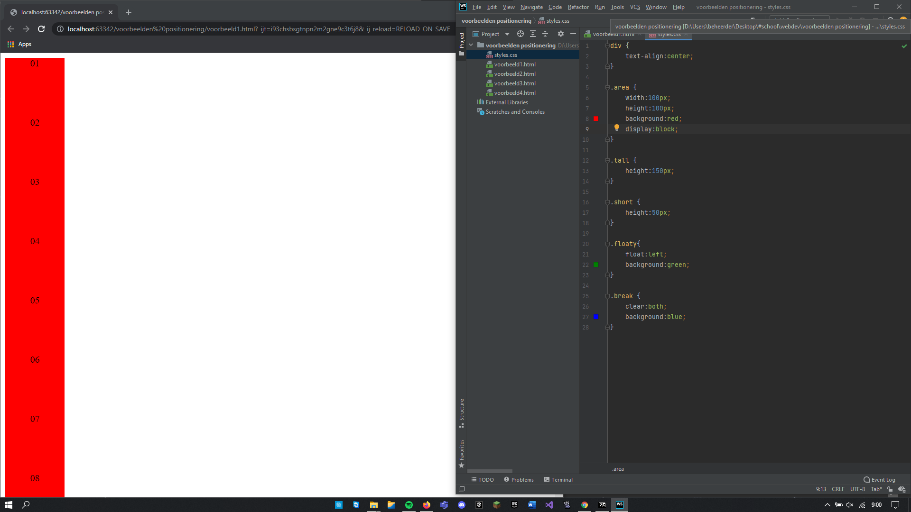
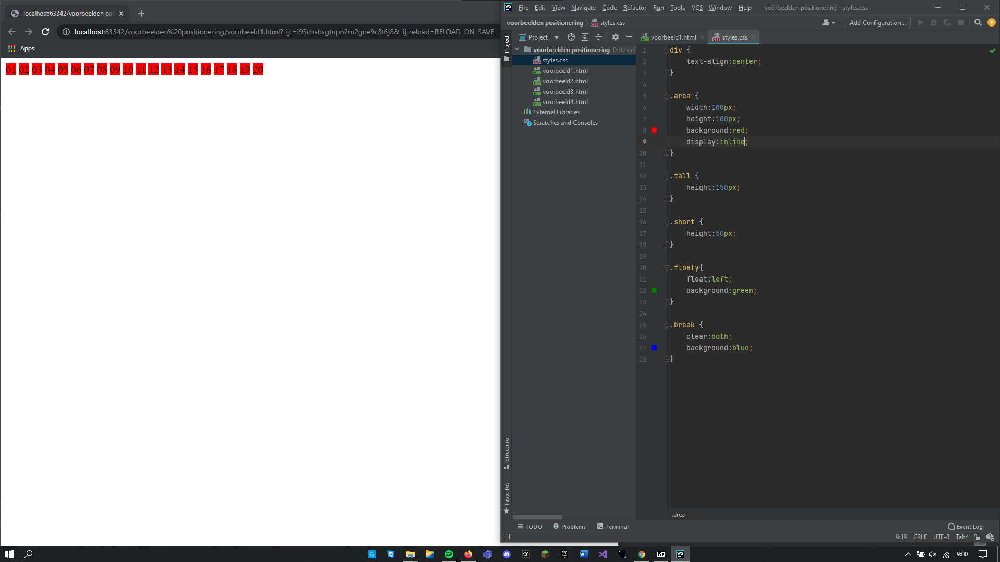
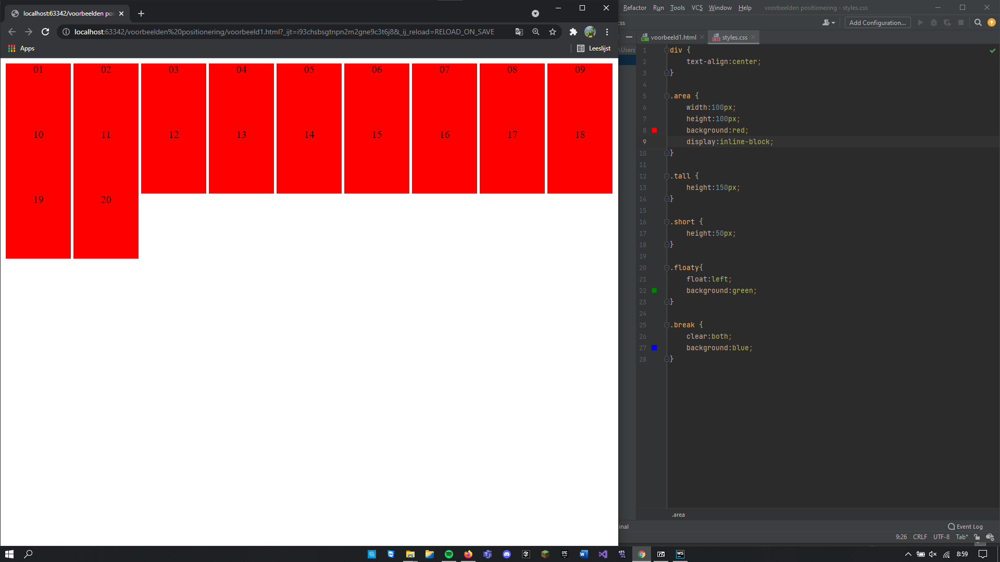

het element 'block' zorgt voor het grote rode blok, terwijl inline ervoor zorgt dat alles netjes naast elkaar staat, als je de twee combineerd staan ze netjes op een rij met een groot rood blok
om dus een antwoord te geven op de vraag, als 'inline' wordt meegegeven wordt de opgegeven height en width genegeerd